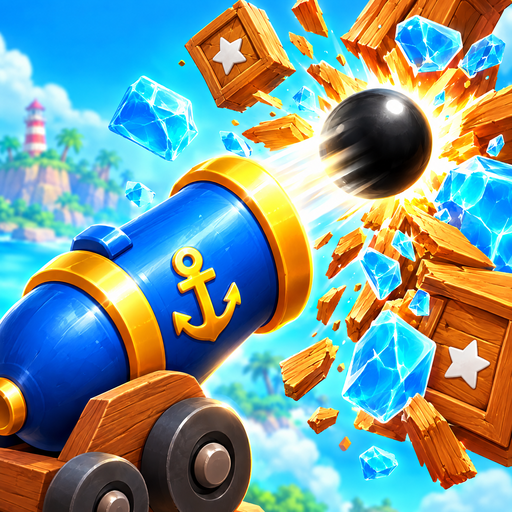

Blastbeak: Cannon Puzzle – Support
Developer: Kasanan Games · Last updated: 17 October 2026
Contact
Email albenk@gmail.com. Please include your iPhone model, iOS version and the level number. The Support button in the game's Settings opens an email with a ready subject line. We usually reply within 2 business days.
Frequently asked questions
Is the game free?
Yes. Blastbeak is free to download and play, has no ads, and you can retry any level as often as you like. Coins are earned by playing (harder levels and balls left over pay more) and spent on special shots. The Store offers optional coin packs, chests and the Captain's Pass if you want more; nothing in the game requires a purchase.
I bought something but did not get it, or I want a refund.
Restart the game while online: it finishes any purchase Apple has confirmed. The Captain's Pass can be restored on a new or reset iPhone with Settings > Restore Purchases. Coin packs and chests are used up in the game and cannot be restored after deleting the game. Payments and refunds are handled by Apple: request a refund at reportaproblem.apple.com. If something is still missing, email us the date of purchase and the item name (never send card details).
I ran out of balls. What now?
The level restarts right away. Retries are free and unlimited, with no waiting.
How do I get more special shots?
The Ice Ball, Bomb, Lightning and Parrot Strike unlock at levels 3, 5, 8 and 12. Every third win gives you a free one, single shots can be bought with coins right on the weapon bar, and the Shop's Power-Ups shelf sells packs of three for coins.
I lost my progress after reinstalling or changing phones.
Progress and coins are saved only on your device. There is no account, so we cannot restore them if you delete the game or reset the phone. An iCloud or computer backup of the phone that includes the game restores its data. The Captain's Pass can always be restored with Restore Purchases.
How do the leagues and online leaderboards work?
Open the Leaderboard tab and tap Join. Every level you win earns points; you compete in a weekly league of up to 50 players (Bronze, Silver, Gold, Diamond) and appear in the country, world and all-time rankings. Weekly points reset every Monday at 00:00 UTC. Other players see your pirate name, country and points, so do not use your real name. Joining is optional and needs an internet connection.
How do I leave the leaderboards or report a name?
To leave, open the Leaderboard tab, tap Leave leaderboards below the list and confirm: your leaderboard profile, name and scores are deleted. You can join again later with a fresh profile. To deal with an offensive name, tap that player's row: Hide this captain hides them on your phone, Report name opens an email to us with the details. We remove offensive names, normally within 24 hours.
And Game Center?
If you are signed in to Game Center (iOS Settings > Game Center), the number of levels you have cleared also goes to an Apple-hosted Game Center leaderboard where you can compare with friends. It is optional; the game works fully without it.
What is "Usage data" in Settings?
If you switch it on, the game sends gameplay statistics, tied to a random installation ID and not to you, (such as which levels are finished or failed, and whether the game crashed) to Unity Analytics, which helps us make levels fairer. It is off unless you agreed when the game asked. Switching it off stops collection and asks Unity to delete what was collected from your installation. Details are in the Privacy Policy.
How do I turn off music, sound or vibration?
Open Settings (gear icon) in the game and switch Music, Sound or Haptics off.
How do I delete my data?
In Settings, switch Usage data off (Unity is asked to delete your statistics) and, if you joined, tap Leave leaderboards on the Leaderboard tab (your online profile and scores are deleted). Then delete the game from your iPhone: this removes the pirate name and all progress on the device. If you deleted the game before leaving the leaderboards, email us your pirate name and we will delete the profile.
Which devices are supported?
iPhone with iOS 15 or later, in portrait orientation. The game works offline; an internet connection is needed only for purchases, the online leaderboards, Game Center and, if you agreed, for sending gameplay statistics.
Destek
Bize albenk@gmail.com adresinden ulaşabilirsiniz. Sorun bildirirken iPhone modelini, iOS sürümünü ve bölüm numarasını yazmanız yeterli.
Oyun ücretsiz mi? Evet, ücretsiz indirilir ve oynanır, reklam yoktur; her bölümü istediğiniz kadar tekrar deneyebilirsiniz. Altınlar oynayarak kazanılır; Mağaza'da isteğe bağlı altın paketleri, sandıklar ve Captain's Pass vardır. Toplar bitince bölüm hemen yeniden başlar. Özel atışlar 3, 5, 8 ve 12. bölümlerde açılır; her üç galibiyette bir tane hediye edilir ve Mağaza'daki Power-Ups rafından altınla alınabilir.
İlerleme kaybı: İlerlemeniz yalnızca cihazınızda saklanır; oyunu silerseniz veya telefonu sıfırlarsanız geri yüklenemez.
Kullanım verisi: Ayarlar > Usage data açıksa, rastgele bir kurulum kimliğine bağlı oyun istatistikleri Unity Analytics'e gönderilir; kapatınca toplama durur ve silme talebi gönderilir.
Satın almalar: Captain's Pass, Ayarlar > Restore Purchases ile geri yüklenir; altın paketleri ve sandıklar oyunu silince geri yüklenemez. İade talepleri Apple'a yapılır: reportaproblem.apple.com.
Sıralamalar: Leaderboard sekmesinde Join'e dokunarak haftalık liglere ve ülke/dünya sıralamalarına katılırsınız; diğer oyuncular korsan adınızı, ülkenizi ve puanınızı görür. Aynı sekmedeki Leave leaderboards düğmesiyle ayrılırsınız ve profiliniz silinir. Bir oyuncunun satırına dokunarak onu gizleyebilir veya adını bildirebilirsiniz.
Game Center: Sıralama için iOS Ayarlar > Game Center'a giriş yapın; sıralamayı oyundaki Ayarlar > Leaderboard ile açabilirsiniz.